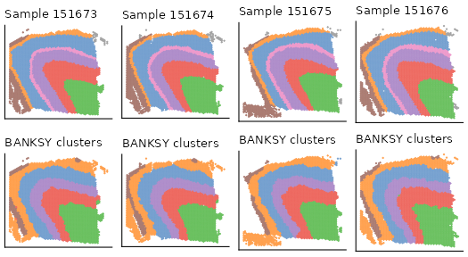
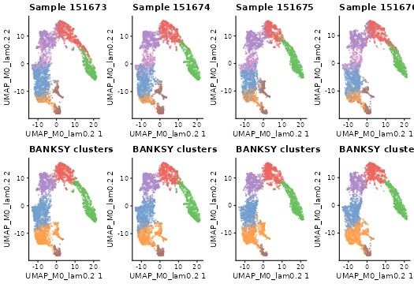

Here, we demonstrate BANKSY analysis on 10x Visium data of the human dorsolateral prefrontal cortex from Maynard et al (2018). The data comprise 12 samples obtained from 3 subjects, with manual annotation of the layers in each sample. We will focus on 4 of the 12 samples from subject 3, demonstrating multi-sample analysis with BANKSY.
library(Banksy)
library(SummarizedExperiment)
library(SpatialExperiment)
library(Seurat)
library(scater)
library(cowplot)
library(ggplot2)We fetch the data for all 12 DLPFC samples with the spatialLIBD package. This might take awhile.
library(spatialLIBD)
library(ExperimentHub)
ehub <- ExperimentHub::ExperimentHub()
spe <- spatialLIBD::fetch_data(type = "spe", eh = ehub)After the download is completed, we trim the SpatialExperiment object, retaining only the counts and some metadata such as the sample identifier and pathology annotations. This saves some memory.
imgData(spe) <- NULL
assay(spe, "logcounts") <- NULL
reducedDims(spe) <- NULL
rowData(spe) <- NULL
colData(spe) <- DataFrame(
sample_id = spe$sample_id,
clust_annotation = factor(
addNA(spe$layer_guess_reordered_short),
exclude = NULL, labels = seq(8)
),
in_tissue = spe$in_tissue,
row.names = colnames(spe)
)
invisible(gc())Next, subset spe to samples from the last subject
(samples 151673, 151674, 151675,
151676). This stores each sample in its own
SpatialExperiment object, all placed in a list.
sample_names <- as.character(151673:151676)
spe_list <- lapply(sample_names, function(x) spe[, spe$sample_id == x])
rm(spe)
invisible(gc())Using Seurat, we perform basic normalisation of the data, and select the top 2000 highly variable features from each sample. Other methods for normalisation and feature selection may also be used. We take the union of these features for downstream analysis.
#' Normalize data
seu_list <- lapply(spe_list, function(x) {
x <- as.Seurat(x, data = NULL)
NormalizeData(x, scale.factor = 5000, normalization.method = 'RC')
})
#' Compute HVGs
hvgs <- lapply(seu_list, function(x) {
VariableFeatures(FindVariableFeatures(x, nfeatures = 2000))
})
hvgs <- Reduce(union, hvgs)
#' Add data to SpatialExperiment and subset to HVGs
aname <- "normcounts"
spe_list <- Map(function(spe, seu) {
assay(spe, aname) <- GetAssayData(seu)
spe[hvgs,]
}, spe_list, seu_list)
rm(seu_list)
invisible(gc())Merge the objects:
To run BANKSY across multiple samples, we first compute the BANKSY
neighborhood feature matrices for each sample separately. We use
k_geom=6 corresponding to the first-order neighbors in 10x
Visium assays (k_geom=18 corresponding to first and
second-order neighbors may also be used).
When running multi-sample BANKSY PCA, the group argument
may be provided. This specifies the grouping variable for the cells or
spots across the samples. Features belonging to cells or spots
corresponding to each level of the grouping variable will be z-scaled
separately. In this case, sample_id in
colData(spe_joint) gives the grouping based on the sample
of origin.
k_geom <- 6
lambda <- 0.2
npcs <- 20
spe_joint <- runBanksyPCA(spe_joint, assay_name = aname, lambda = lambda, k_geom = k_geom, npcs = npcs, group = "sample_id", seed = 1000)Run UMAP on the BANKSY embedding:
spe_joint <- runBanksyUMAP(spe_joint, lambda = lambda, seed = 1000)Finally, we obtain cluster labels for spots across all 4 samples. We
use connectClusters for visual comparison of the manual
annotations and BANKSY clusters.
res <- 0.55
spe_joint <- clusterBanksy(spe_joint, lambda = lambda, resolution = res, seed = 1000)
cnm <- sprintf("clust_M0_lam%s_k50_res%s", lambda, res)
spe_joint <- connectClusters(spe_joint)Once joint clustering is performed, we split the samples into their
own SpatialExperiment objects:
spe_list <- lapply(sample_names, function(x) spe_joint[, spe_joint$sample_id == x])
rm(spe_joint)
invisible(gc())As an optional step, we smooth the cluster labels of each sample separately. This can be done if smooth spatial domains are expected in the biological sample or tissue in question.
spe_list <- lapply(spe_list, smoothLabels, cluster_names = cnm, k = 6L, verbose = FALSE)
names(spe_list) <- paste0("sample_", sample_names)The raw and smoothed cluster labels are stored in the
colData slot of each SingleCellExperiment or
SpatialExperiment object.
#> DataFrame with 6 rows and 5 columns
#> sample_id clust_annotation in_tissue
#> <character> <factor> <logical>
#> AAACAAGTATCTCCCA-1 151673 1 TRUE
#> AAACAATCTACTAGCA-1 151673 7 TRUE
#> AAACACCAATAACTGC-1 151673 2 TRUE
#> AAACAGAGCGACTCCT-1 151673 1 TRUE
#> AAACAGCTTTCAGAAG-1 151673 4 TRUE
#> AAACAGGGTCTATATT-1 151673 3 TRUE
#> clust_M0_lam0.2_k50_res0.55
#> <factor>
#> AAACAAGTATCTCCCA-1 5
#> AAACAATCTACTAGCA-1 7
#> AAACACCAATAACTGC-1 2
#> AAACAGAGCGACTCCT-1 1
#> AAACAGCTTTCAGAAG-1 3
#> AAACAGGGTCTATATT-1 2
#> clust_M0_lam0.2_k50_res0.55_smooth
#> <factor>
#> AAACAAGTATCTCCCA-1 1
#> AAACAATCTACTAGCA-1 7
#> AAACACCAATAACTGC-1 2
#> AAACAGAGCGACTCCT-1 1
#> AAACAGCTTTCAGAAG-1 3
#> AAACAGGGTCTATATT-1 2We can compare BANKSY clusters to pathology annotations using several
cluster comparison measures such as the adjusted Rand index (ARI) or
normalized mutual information (NMI) with compareClusters.
The function computes the selected comparison measure between all pairs
of cluster labels:
compareClusters(spe_list$sample_151673, func = 'ARI')
#> clust_annotation clust_M0_lam0.2_k50_res0.55
#> clust_annotation 1.000 0.553
#> clust_M0_lam0.2_k50_res0.55 0.553 1.000
#> clust_M0_lam0.2_k50_res0.55_smooth 0.569 0.905
#> clust_M0_lam0.2_k50_res0.55_smooth
#> clust_annotation 0.569
#> clust_M0_lam0.2_k50_res0.55 0.905
#> clust_M0_lam0.2_k50_res0.55_smooth 1.000We evaluate the ARI and NMI for each sample:
ari <- sapply(spe_list, function(x) as.numeric(tail(compareClusters(x, func = "ARI")[, 1], n = 1)))
ari
#> sample_151673 sample_151674 sample_151675 sample_151676
#> 0.569 0.659 0.624 0.590
nmi <- sapply(spe_list, function(x) as.numeric(tail(compareClusters(x, func = "NMI")[, 1], n = 1)))
nmi
#> sample_151673 sample_151674 sample_151675 sample_151676
#> 0.705 0.751 0.716 0.695Visualise pathology annotation and BANKSY cluster on spatial coordinates with the ggspavis package:
# Use scater:::.get_palette('tableau10medium')
pal <- c(
"#729ECE", "#FF9E4A", "#67BF5C", "#ED665D", "#AD8BC9",
"#A8786E", "#ED97CA", "#A2A2A2", "#CDCC5D", "#6DCCDA"
)
plot_bank <- lapply(spe_list, function(x) {
df <- cbind.data.frame(
clust=colData(x)[[sprintf("%s_smooth", cnm)]], spatialCoords(x))
ggplot(df, aes(x=pxl_row_in_fullres, y=pxl_col_in_fullres, col=clust)) +
geom_point(size = 0.5) +
scale_color_manual(values = pal) +
theme_classic() +
theme(
legend.position = "none",
axis.text.x=element_blank(),
axis.text.y=element_blank(),
axis.ticks=element_blank(),
axis.title.x=element_blank(),
axis.title.y=element_blank()) +
labs(title = "BANKSY clusters") +
coord_equal()
})
plot_anno <- lapply(spe_list, function(x) {
df <- cbind.data.frame(
clust=colData(x)[['clust_annotation']], spatialCoords(x))
ggplot(df, aes(x=pxl_row_in_fullres, y=pxl_col_in_fullres, col=clust)) +
geom_point(size = 0.5) +
scale_color_manual(values = pal) +
theme_classic() +
theme(
legend.position = "none",
axis.text.x=element_blank(),
axis.text.y=element_blank(),
axis.ticks=element_blank(),
axis.title.x=element_blank(),
axis.title.y=element_blank()) +
labs(title = sprintf("Sample %s", x$sample_id[1])) +
coord_equal()
})
plot_list <- c(plot_anno, plot_bank)
plot_grid(plotlist = plot_list, ncol = 4, byrow = TRUE)
Visualize joint UMAPs for each sample:
umap_bank <- lapply(spe_list, function(x) {
plotReducedDim(x,
"UMAP_M0_lam0.2",
colour_by = sprintf("%s_smooth", cnm),
point_size = 0.5
) +
theme(legend.position = "none") +
labs(title = "BANKSY clusters")
})
umap_anno <- lapply(spe_list, function(x) {
plotReducedDim(x,
"UMAP_M0_lam0.2",
colour_by = "clust_annotation",
point_size = 0.5
) +
theme(legend.position = "none") +
labs(title = sprintf("Sample %s", x$sample_id[1]))
})
umap_list <- c(umap_anno, umap_bank)
plot_grid(plotlist = umap_list, ncol = 4, byrow = TRUE)
Vignette runtime:
#> Time difference of 1.227651 mins
options(width = 120)
sessioninfo::session_info()
#> ─ Session info ───────────────────────────────────────────────────────────────────────────────────────────────────────
#> setting value
#> version R version 4.5.1 (2025-06-13)
#> os Rocky Linux 9.8 (Blue Onyx)
#> system x86_64, linux-gnu
#> ui X11
#> language en
#> collate C.UTF-8
#> ctype C.UTF-8
#> tz America/Los_Angeles
#> date 2026-09-29
#> pandoc 3.11 @ /gpfs/scrubbed/jxlee/conda/envs/banksy-bench-2/bin/ (via rmarkdown)
#> quarto NA
#>
#> ─ Packages ───────────────────────────────────────────────────────────────────────────────────────────────────────────
#> package * version date (UTC) lib source
#> abind 1.4-8 2024-09-12 [1] CRAN (R 4.5.1)
#> AnnotationDbi 1.72.0 2025-10-29 [1] Bioconductor 3.22 (R 4.5.2)
#> AnnotationHub * 4.0.0 2025-10-29 [1] Bioconductor 3.22 (R 4.5.2)
#> aricode 1.1.0 2026-05-13 [1] CRAN (R 4.5.3)
#> attempt 0.3.1 2020-05-03 [1] CRAN (R 4.5.1)
#> Banksy * 1.9.4 2026-09-29 [1] local (/gpfs/projects/h2lab/jxlee/genome-institute/Banksy)
#> beachmat 2.26.0 2025-10-29 [1] Bioconductor 3.22 (R 4.5.2)
#> beeswarm 0.4.0 2021-06-01 [1] CRAN (R 4.5.1)
#> benchmarkme 1.0.8 2022-06-12 [1] CRAN (R 4.5.1)
#> benchmarkmeData 2.0.0 2026-01-19 [1] CRAN (R 4.5.2)
#> Biobase * 2.70.0 2025-10-29 [1] Bioconductor 3.22 (R 4.5.2)
#> BiocFileCache * 3.0.0 2025-10-29 [1] Bioconductor 3.22 (R 4.5.2)
#> BiocGenerics * 0.56.0 2025-10-29 [1] Bioconductor 3.22 (R 4.5.2)
#> BiocIO 1.20.0 2025-10-29 [1] Bioconductor 3.22 (R 4.5.2)
#> BiocManager 1.30.27 2025-11-14 [1] CRAN (R 4.5.2)
#> BiocNeighbors 2.4.0 2025-10-29 [1] Bioconductor 3.22 (R 4.5.2)
#> BiocParallel 1.44.0 2025-10-29 [1] Bioconductor 3.22 (R 4.5.2)
#> BiocSingular 1.26.1 2025-11-17 [1] Bioconductor 3.22 (R 4.5.2)
#> BiocStyle * 2.38.0 2025-10-29 [1] Bioconductor 3.22 (R 4.5.2)
#> BiocVersion 3.22.0 2025-10-07 [1] Bioconductor 3.22 (R 4.5.2)
#> Biostrings 2.78.0 2025-10-29 [1] Bioconductor 3.22 (R 4.5.2)
#> bit 4.6.0 2025-03-06 [1] CRAN (R 4.5.1)
#> bit64 4.8.6 2026-09-01 [1] CRAN (R 4.5.3)
#> bitops 1.1-0 2026-07-30 [1] CRAN (R 4.5.3)
#> blob 1.3.0 2026-01-14 [1] CRAN (R 4.5.2)
#> bookdown 0.47 2026-06-16 [1] CRAN (R 4.5.3)
#> bslib 0.12.0 2026-08-04 [1] CRAN (R 4.5.3)
#> cachem 1.1.0 2024-05-16 [1] CRAN (R 4.5.1)
#> cigarillo 1.0.0 2025-10-29 [1] Bioconductor 3.22 (R 4.5.2)
#> circlize 0.4.18 2026-04-04 [1] CRAN (R 4.5.3)
#> cli 3.6.6 2026-04-09 [1] CRAN (R 4.5.3)
#> clue 0.3-68 2026-03-26 [1] CRAN (R 4.5.3)
#> cluster 2.1.8.3 2026-07-30 [1] CRAN (R 4.5.3)
#> codetools 0.2-20 2024-03-31 [1] CRAN (R 4.5.1)
#> colorspace 2.1-3 2026-07-12 [1] CRAN (R 4.5.3)
#> ComplexHeatmap 2.26.1 2026-02-03 [1] Bioconductor 3.22 (R 4.5.2)
#> config 0.3.2 2023-08-30 [1] CRAN (R 4.5.1)
#> cowplot * 1.2.0 2025-07-07 [1] CRAN (R 4.5.1)
#> crayon 1.5.3 2024-06-20 [1] CRAN (R 4.5.1)
#> curl 8.0.0 2026-08-25 [1] CRAN (R 4.5.3)
#> data.table 1.18.6.1 2026-08-24 [1] CRAN (R 4.5.3)
#> DBI 1.3.0 2026-02-25 [1] CRAN (R 4.5.2)
#> dbplyr * 2.6.0 2026-06-17 [1] CRAN (R 4.5.3)
#> dbscan 1.2.6 2026-08-25 [1] CRAN (R 4.5.3)
#> DelayedArray 0.36.1 2026-03-31 [1] Bioconductor 3.22 (R 4.5.3)
#> deldir 2.0-4 2024-02-28 [1] CRAN (R 4.5.1)
#> desc 1.4.3 2023-12-10 [1] CRAN (R 4.5.1)
#> dichromat 2.0-1 2026-07-22 [1] CRAN (R 4.5.3)
#> digest 0.6.39 2025-11-19 [1] CRAN (R 4.5.2)
#> doParallel 1.0.17 2022-02-07 [1] CRAN (R 4.5.1)
#> dotCall64 1.2 2024-10-04 [1] CRAN (R 4.5.1)
#> dplyr 1.2.1 2026-04-03 [1] CRAN (R 4.5.3)
#> DT 0.34.0 2025-09-02 [1] CRAN (R 4.5.1)
#> edgeR 4.8.2 2025-12-25 [1] Bioconductor 3.22 (R 4.5.3)
#> evaluate 1.0.5 2025-08-27 [1] CRAN (R 4.5.1)
#> ExperimentHub * 3.0.0 2025-10-29 [1] Bioconductor 3.22 (R 4.5.2)
#> farver 2.1.2 2024-05-13 [1] CRAN (R 4.5.1)
#> fastDummies 1.7.6 2026-04-22 [1] CRAN (R 4.5.3)
#> fastmap 1.2.0 2024-05-15 [1] CRAN (R 4.5.1)
#> filelock 1.0.3 2023-12-11 [1] CRAN (R 4.5.1)
#> fitdistrplus 1.2-6 2026-01-24 [1] CRAN (R 4.5.2)
#> foreach 1.5.2 2022-02-02 [1] CRAN (R 4.5.1)
#> fs 2.1.0 2026-04-18 [1] CRAN (R 4.5.3)
#> future 1.76.0 2026-09-24 [1] CRAN (R 4.5.3)
#> future.apply 1.20.2 2026-02-20 [1] CRAN (R 4.5.2)
#> generics * 0.1.4 2025-05-09 [1] CRAN (R 4.5.1)
#> GenomicAlignments 1.46.0 2025-10-29 [1] Bioconductor 3.22 (R 4.5.2)
#> GenomicRanges * 1.62.1 2025-12-08 [1] Bioconductor 3.22 (R 4.5.2)
#> GetoptLong 1.1.1 2026-04-08 [1] CRAN (R 4.5.3)
#> ggbeeswarm 0.7.3 2025-11-29 [1] CRAN (R 4.5.2)
#> ggplot2 * 4.0.3 2026-04-22 [1] CRAN (R 4.5.3)
#> ggrepel 0.9.8 2026-03-17 [1] CRAN (R 4.5.3)
#> ggridges 0.5.7 2025-08-27 [1] CRAN (R 4.5.1)
#> GlobalOptions 0.1.4 2026-04-08 [1] CRAN (R 4.5.3)
#> globals 0.19.1 2026-03-13 [1] CRAN (R 4.5.3)
#> glue 1.8.1 2026-04-17 [1] CRAN (R 4.5.3)
#> goftest 1.2-3 2021-10-07 [1] CRAN (R 4.5.1)
#> golem 1.0.1 2026-07-07 [1] CRAN (R 4.5.3)
#> gridExtra 2.3.1 2026-06-25 [1] CRAN (R 4.5.3)
#> gtable 0.3.6 2024-10-25 [1] CRAN (R 4.5.1)
#> htmltools 0.5.9 2025-12-04 [1] CRAN (R 4.5.2)
#> htmlwidgets 1.6.4 2023-12-06 [1] CRAN (R 4.5.1)
#> httpuv 1.6.17 2026-03-18 [1] CRAN (R 4.5.3)
#> httr 1.4.9 2026-09-01 [1] CRAN (R 4.5.3)
#> httr2 1.3.0 2026-07-13 [1] CRAN (R 4.5.3)
#> ica 1.0-3 2022-07-08 [1] CRAN (R 4.5.1)
#> igraph 2.3.3 2026-06-26 [1] CRAN (R 4.5.3)
#> IRanges * 2.44.0 2025-10-29 [1] Bioconductor 3.22 (R 4.5.2)
#> irlba 2.3.7 2026-01-30 [1] CRAN (R 4.5.2)
#> iterators 1.0.14 2022-02-05 [1] CRAN (R 4.5.1)
#> jquerylib 0.1.4 2021-04-26 [1] CRAN (R 4.5.1)
#> jsonlite 2.0.0 2025-03-27 [1] CRAN (R 4.5.1)
#> KEGGREST 1.50.0 2025-10-29 [1] Bioconductor 3.22 (R 4.5.2)
#> KernSmooth 2.23-27 2026-08-12 [1] CRAN (R 4.5.3)
#> knitr 1.52 2026-09-06 [1] CRAN (R 4.5.3)
#> labeling 0.4.3 2023-08-29 [1] CRAN (R 4.5.1)
#> later 1.4.8 2026-03-05 [1] CRAN (R 4.5.2)
#> lattice 0.23-1 2026-08-12 [1] CRAN (R 4.5.3)
#> leidenAlg 1.1.8 2026-05-31 [1] CRAN (R 4.5.3)
#> lifecycle 1.0.5 2026-01-08 [1] CRAN (R 4.5.2)
#> limma 3.66.0 2025-10-29 [1] Bioconductor 3.22 (R 4.5.2)
#> listenv 1.0.0 2026-06-22 [1] CRAN (R 4.5.3)
#> lmtest 0.9-40 2022-03-21 [1] CRAN (R 4.5.1)
#> locfit 1.5-9.12 2025-03-05 [1] CRAN (R 4.5.1)
#> magick 2.9.1 2026-02-28 [1] CRAN (R 4.5.2)
#> magrittr 2.0.5 2026-04-04 [1] CRAN (R 4.5.3)
#> MASS 7.3-66 2026-07-15 [1] CRAN (R 4.5.3)
#> Matrix 1.7-6 2026-07-25 [1] CRAN (R 4.5.3)
#> MatrixGenerics * 1.22.0 2025-10-29 [1] Bioconductor 3.22 (R 4.5.2)
#> matrixStats * 1.5.0 2025-01-07 [1] CRAN (R 4.5.1)
#> mclust 6.1.3 2026-07-05 [1] CRAN (R 4.5.3)
#> memoise 2.0.1 2021-11-26 [1] CRAN (R 4.5.1)
#> mime 0.13 2025-03-17 [1] CRAN (R 4.5.1)
#> miniUI 0.1.2 2025-04-17 [1] CRAN (R 4.5.1)
#> nlme 3.1-170 2026-07-15 [1] CRAN (R 4.5.3)
#> otel 0.2.0 2025-08-29 [1] CRAN (R 4.5.1)
#> paletteer 1.7.0 2026-01-08 [1] CRAN (R 4.5.2)
#> parallelly 1.48.0 2026-06-29 [1] CRAN (R 4.5.3)
#> patchwork 1.3.2 2025-08-25 [1] CRAN (R 4.5.1)
#> pbapply 1.7-4 2025-07-20 [1] CRAN (R 4.5.1)
#> pillar 1.11.1 2025-09-17 [1] CRAN (R 4.5.1)
#> pkgconfig 2.0.3 2019-09-22 [1] CRAN (R 4.5.1)
#> pkgdown 2.1.3 2025-05-25 [1] CRAN (R 4.5.1)
#> plotly 4.12.1 2026-07-22 [1] CRAN (R 4.5.3)
#> plyr 1.8.9 2023-10-02 [1] CRAN (R 4.5.1)
#> png 0.1-9 2026-03-15 [1] CRAN (R 4.5.3)
#> polyclip 1.10-7 2024-07-23 [1] CRAN (R 4.5.1)
#> progressr 1.0.0 2026-07-04 [1] CRAN (R 4.5.3)
#> promises 1.5.0 2025-11-01 [1] CRAN (R 4.5.2)
#> purrr 1.2.2 2026-04-10 [1] CRAN (R 4.5.3)
#> R6 2.6.1 2025-02-15 [1] CRAN (R 4.5.1)
#> ragg 1.5.2 2026-03-23 [1] CRAN (R 4.5.3)
#> RANN 2.6.2 2024-08-25 [1] CRAN (R 4.5.1)
#> rappdirs 0.3.4 2026-01-17 [1] CRAN (R 4.5.2)
#> RColorBrewer 1.1-3 2022-04-03 [1] CRAN (R 4.5.1)
#> Rcpp 1.1.2 2026-07-05 [1] CRAN (R 4.5.3)
#> RcppAnnoy 0.0.23 2026-01-12 [1] CRAN (R 4.5.2)
#> RcppHNSW 0.7.0 2026-05-26 [1] CRAN (R 4.5.3)
#> RcppHungarian 0.3 2023-09-05 [1] CRAN (R 4.5.3)
#> RCurl 1.98-1.19 2026-06-03 [1] CRAN (R 4.5.3)
#> rematch2 2.1.2 2020-05-01 [1] CRAN (R 4.5.1)
#> reshape2 1.4.5 2025-11-12 [1] CRAN (R 4.5.2)
#> restfulr 0.0.17 2026-06-11 [1] CRAN (R 4.5.3)
#> reticulate 1.47.0 2026-09-03 [1] CRAN (R 4.5.3)
#> rjson 0.2.23 2024-09-16 [1] CRAN (R 4.5.1)
#> rlang 1.3.0 2026-07-05 [1] CRAN (R 4.5.3)
#> rmarkdown 2.32 2026-09-01 [1] CRAN (R 4.5.3)
#> ROCR 1.0-12 2026-01-23 [1] CRAN (R 4.5.2)
#> Rsamtools 2.26.0 2025-10-29 [1] Bioconductor 3.22 (R 4.5.2)
#> RSpectra 0.16-2 2024-07-18 [1] CRAN (R 4.5.1)
#> RSQLite 3.53.3 2026-06-30 [1] CRAN (R 4.5.3)
#> rsvd 1.0.5 2021-04-16 [1] CRAN (R 4.5.1)
#> rtracklayer 1.70.1 2025-12-22 [1] Bioconductor 3.22 (R 4.5.2)
#> Rtsne 0.17 2023-12-07 [1] CRAN (R 4.5.1)
#> S4Arrays 1.10.1 2025-12-01 [1] Bioconductor 3.22 (R 4.5.2)
#> S4Vectors * 0.48.1 2026-04-05 [1] Bioconductor 3.22 (R 4.5.3)
#> S7 0.2.2 2026-04-22 [1] CRAN (R 4.5.3)
#> sass 0.4.10 2025-04-11 [1] CRAN (R 4.5.1)
#> ScaledMatrix 1.18.0 2025-10-29 [1] Bioconductor 3.22 (R 4.5.2)
#> scales 1.4.0 2025-04-24 [1] CRAN (R 4.5.1)
#> scater * 1.38.1 2026-03-20 [1] Bioconductor 3.22 (R 4.5.3)
#> scattermore 1.2 2023-06-12 [1] CRAN (R 4.5.1)
#> sccore 1.0.7 2026-04-06 [1] CRAN (R 4.5.3)
#> sctransform 0.4.3 2026-01-10 [1] CRAN (R 4.5.2)
#> scuttle * 1.20.0 2025-10-30 [1] Bioconductor 3.22 (R 4.5.2)
#> Seqinfo * 1.0.0 2025-10-29 [1] Bioconductor 3.22 (R 4.5.2)
#> sessioninfo 1.2.4 2026-06-04 [1] CRAN (R 4.5.3)
#> Seurat * 5.4.0 2025-12-14 [1] CRAN (R 4.5.2)
#> SeuratObject * 5.4.0 2026-04-11 [1] CRAN (R 4.5.3)
#> shape 1.4.6.1 2024-02-23 [1] CRAN (R 4.5.1)
#> shiny 1.14.0 2026-06-21 [1] CRAN (R 4.5.3)
#> shinyWidgets 0.9.1 2026-03-09 [1] CRAN (R 4.5.2)
#> SingleCellExperiment * 1.32.0 2025-10-29 [1] Bioconductor 3.22 (R 4.5.2)
#> sp * 2.2-3 2026-07-19 [1] CRAN (R 4.5.3)
#> spam 2.11-4 2026-05-29 [1] CRAN (R 4.5.3)
#> SparseArray 1.10.10 2026-03-30 [1] Bioconductor 3.22 (R 4.5.3)
#> SpatialExperiment * 1.20.0 2025-10-29 [1] Bioconductor 3.22 (R 4.5.2)
#> spatialLIBD * 1.22.0 2025-11-04 [1] Bioconductor 3.22 (R 4.5.1)
#> spatstat.data 3.1-9 2025-10-18 [1] CRAN (R 4.5.1)
#> spatstat.explore 3.8-2 2026-07-27 [1] CRAN (R 4.5.3)
#> spatstat.geom 3.8-2 2026-07-24 [1] CRAN (R 4.5.3)
#> spatstat.random 3.5-1 2026-07-27 [1] CRAN (R 4.5.3)
#> spatstat.sparse 3.2-0 2026-05-21 [1] CRAN (R 4.5.3)
#> spatstat.univar 3.2-0 2026-05-18 [1] CRAN (R 4.5.3)
#> spatstat.utils 3.2-5 2026-09-11 [1] CRAN (R 4.5.3)
#> statmod 1.5.2 2026-05-17 [1] CRAN (R 4.5.3)
#> stringi 1.8.7 2025-03-27 [1] CRAN (R 4.5.1)
#> stringr 1.6.0 2025-11-04 [1] CRAN (R 4.5.2)
#> SummarizedExperiment * 1.40.0 2025-10-29 [1] Bioconductor 3.22 (R 4.5.2)
#> survival 3.8-12 2026-09-09 [1] CRAN (R 4.5.3)
#> systemfonts 1.3.2 2026-03-05 [1] CRAN (R 4.5.2)
#> tensor 1.5.1 2025-06-17 [1] CRAN (R 4.5.1)
#> textshaping 1.0.4 2025-10-10 [1] CRAN (R 4.5.1)
#> tibble 3.3.1 2026-01-11 [1] CRAN (R 4.5.2)
#> tidyr 1.3.2 2025-12-19 [1] CRAN (R 4.5.2)
#> tidyselect 1.2.1 2024-03-11 [1] CRAN (R 4.5.1)
#> uwot 0.2.5 2026-08-29 [1] CRAN (R 4.5.3)
#> vctrs 0.7.3 2026-04-11 [1] CRAN (R 4.5.3)
#> vipor 0.4.7 2023-12-18 [1] CRAN (R 4.5.1)
#> viridis 0.6.5 2024-01-29 [1] CRAN (R 4.5.1)
#> viridisLite 0.4.3 2026-02-04 [1] CRAN (R 4.5.2)
#> withr 3.0.3 2026-06-19 [1] CRAN (R 4.5.3)
#> xfun 0.60 2026-07-09 [1] CRAN (R 4.5.3)
#> XML 3.99-0.22 2026-02-10 [1] CRAN (R 4.5.2)
#> xtable 1.8-8 2026-02-22 [1] CRAN (R 4.5.2)
#> XVector 0.50.0 2025-10-29 [1] Bioconductor 3.22 (R 4.5.2)
#> yaml 2.3.12 2025-12-10 [1] CRAN (R 4.5.2)
#> zoo 1.9-0 2026-07-31 [1] CRAN (R 4.5.3)
#>
#> [1] /gpfs/scrubbed/jxlee/conda/envs/banksy-bench-2/lib/R/library
#> * ── Packages attached to the search path.
#>
#> ──────────────────────────────────────────────────────────────────────────────────────────────────────────────────────